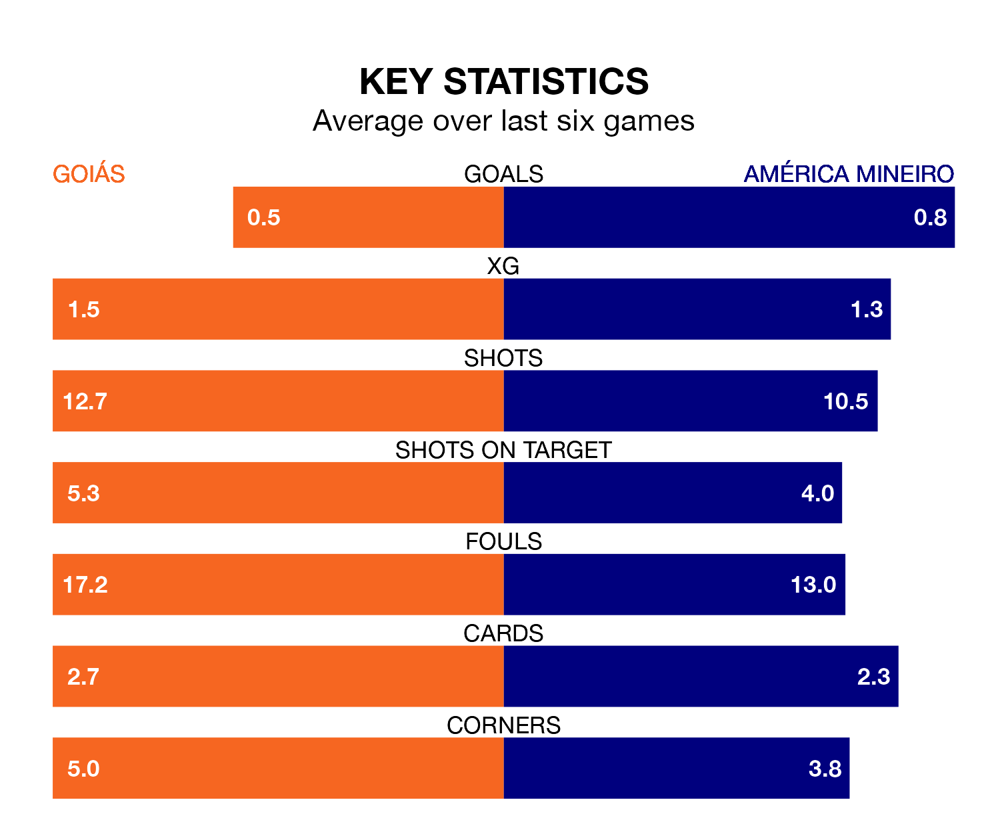

Struggling América Mineiro face Goiás away at Estádio de Hailé Pinheiro on Wednesday looking to build on a win in their last league outing.
After securing all three points with a 3-2 victory over Bahia on Sunday, América Mineiro sit bottom of Serie A.
They travel to play a Goiás side 18th in the standings, who lost in their last match, 1-0 against Fortaleza.
Goiás are in bad form in Serie A, with one win and five losses from their last six games.
With a win and a draw over that period, América Mineiro's form is slightly better – they have taken four points from 18, compared to the hosts' three.
With 35 goals in 37 games so far this season, Goiás are the league's second-lowest scorers with 0.9 goals per game. And they are conceding more than average, letting in 53 goals at a rate of 1.4 per game.
The away team are also below average scorers, with 1.1 goals per game, compared to a league average of 1.2. They have conceded 2.2 goals per game.
In the last three years, Goiás and América Mineiro have played each other on three occasions. They won one each, and they drew once.
Their last meeting was on August 13, when Goiás won 1-0 away.
